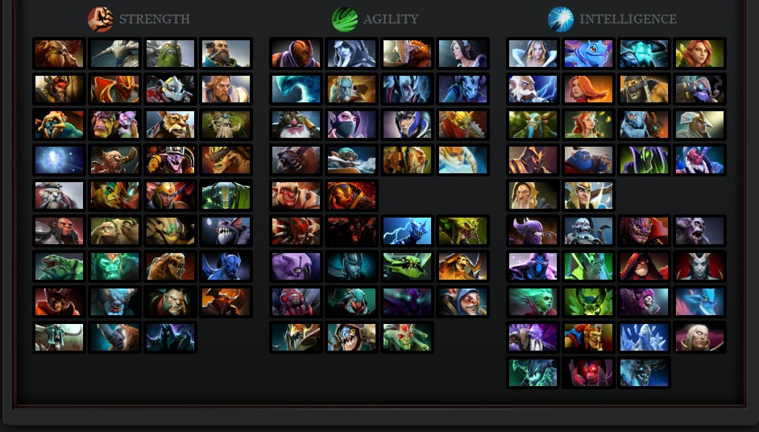

Dota-2
Introduction
Dota 2 is a multiplayer online battle arena (MOBA) game developed by Valve Corporation. As the successor to the
popular Warcraft III custom map Defense of the Ancients (DotA), Dota 2 offers deep, strategic gameplay with a
vast roster of heroes, intense team fights, and a thriving global esports community.

Gameplay
Dota 2 is played between two teams of five players each on a symmetrical map. Players select from a large pool
of heroes with unique abilities and work together to destroy the enemy's Ancient, a large structure located in
their base, while defending their own. Strategic item purchases and coordination are key.

Heroes
Dota 2 features over a hundred heroes, each with distinct abilities and roles such as carry, support, and
initiator. Players choose heroes that complement team composition and strategy, mastering their skills for
various phases of the game.
- Carry: Heroes that excel in late-game with high damage.
- Support: Heroes providing healing, vision, and crowd control.
- Initiator: Heroes that start fights and disrupt enemies.

Competitive Scene
Dota 2 boasts one of the largest esports prize pools globally, with tournaments like The International offering
multimillion-dollar rewards. The competitive scene includes pro leagues, qualifiers, and regional events
attracting millions of fans and players worldwide.
Gallery
Dota 2 — The Ultimate MOBA by Valve Corporation © 2025